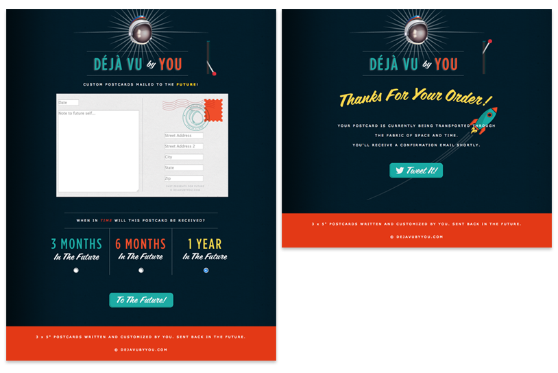
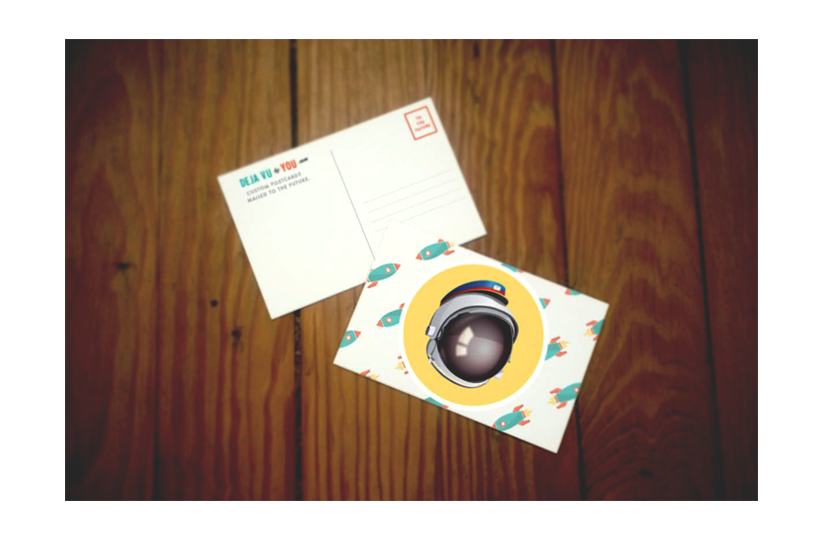

 <!DOCTYPE html>

<html>

<title>Jennings Hanna, Etsy Thesis Work Case Study</title>

<meta name="viewport" content="width=device-width, initial-scale=1">

 <!-- CSS RESET ERIC MEYER
 <link rel="stylesheet" type="text/css" href="assets/reset.css" />
 -->
<link rel="shortcut icon" href="/favicon.ico" type="image/x-icon">
<link rel="icon" href="/favicon.ico" type="image/x-icon">
 
 <!-- Skeleton CSS -->
 <link rel="stylesheet" href="assets/skeleton/normalize.css">
 <link rel="stylesheet" href="assets/skeleton/skeleton.css">
 
 <!-- MY CSS -->
 <link rel="stylesheet" type="text/css" href="assets/style.css" />
 
 <!-- GOOGLE WEB FONT - 'Open Sans' Normal 400 -->
 <link href='http://fonts.googleapis.com/css?family=Open+Sans' rel='stylesheet' type='text/css'>
 
  <!-- FONT AWESOME -->
 <link rel="stylesheet" href="https://maxcdn.bootstrapcdn.com/font-awesome/4.4.0/css/font-awesome.min.css">

</html>

<body >
	<div class="container top">
		<div class="row">
			<div class="twelve columns">
		<p class="color"><a href="index.html"></a>While working on my masters at the School of Visual Arts IxD Department I collaborated with my thesis advisor at <span class="name">Etsy to help design interactions for both buyers and sellers that would encourage reducing the carbon footprint of the platform</span>. As Etsy was going public and changing it's corporate status to a B-Corp (which delegates they report emissions and environmental impact to it's board and shareholders) it was important for the company to gather insights and iterate early stage ideas for users to reduce their carbon footprint. That's what I worked on with many teams including the product, research, and data teams. I also worked with and received input from the VP of Environmental Impact and his group.</p>
				
				<p class="color">What I will tell you though is that it kind of failed. We launched the service on April Fools Day, 2013. Expecting that only a few would order a postcard without any marketing initiative, we were wrong. Within hours we had twenty orders&mdash; one of the first was a guy from Mumbai (we're still very unclear as to how he found our site) and we apologetically had to tell him we couldn't send him one internationally.</p>
				<p class="color">The orders kept coming in and we were pleased. We though to ourselves, "we're gonna be rich".</p>
				<p class="color">Three months later we realized we had to print those postcards and that we didn't have a clue as to how to do that. We knew a little about printing and had both had print design backgrounds but we had made some early mistakes. One of those being that we had not stipulated the image size in the form submission so we couldn't simply pre-populate a template and call it a day. Instead we had to do each and every one by hand. Also, the data was being captured by a third party service and the payment by another so we were losing more than 20% on each order before fulfillment. Lastly, planning the timeline was a nightmare. Since all the cards were ordered on different days we had to hand keep a calendar and remember to send the cards in hopes that they would arrive with the users expected timeline</p>
				
				<p class="color">Soon after this we pulled the plug on the site. And a year later we made the last batch of postcards. We had a retrospective to talk about the things we learned. The biggest lesson was that the world won't wait for you to get everything perfect nor will they care. Many people love being the first to the new shop and enjoy trying new things. We a lower price point we had set ourselves up for early success but without marketing and dedication to building a robust business strategy we were dead in the water. We didn't know how to mend our early success into a larger base of customers and create the type of growth or reach we needed. We also failed to set milestones from the start and although we tried to keep the product as simple as possible we never met the goals it needed to reach like automating the postcard printing and shipping. In the end these things taught us a lot and I am constantly using this as an example within teams and project I work on of a great idea, totally pulled off (even if it was clunky), that blew up in our faces because we never clearly defined a product strategy. The allegory has worked in each and every case.</p>
				<p class="color">I should mention though that we're constantly talking about resurrecting the site and we've pitched it to non-profits like 826 and Code for America and they have shown interest in using it as a fundraising tool. We hope to reboot this nostalgia time machine sooner rather than later.</p>
				
			</div>
		</div>
		<div class="row">
			<hr />
			<p class="color">More case studies:</p>
		</div>
		<div class="row portfolio-cards">
			<div class="four columns">
				<div class="card cornell">
					<p class="color"><a href="cornell.html">Meyer Cancer Center NYC</a></p>
				</div>
			</div>
			<div class="four columns">
				<div class="card spiral">
					<p class="color"><a href="spiral.html">Spiral NFL</a></p>
				</div>
			</div>
			<div class="four columns">
				<div class="card super-bowl">
					<p class="color"><a href="super-bowl.html">Super Bowl Bracket</a></p>
				</div>
			</div>
		</div>
	</div>
	
<script src="http://ajax.googleapis.com/ajax/libs/jquery/1.11.1/jquery.min.js"></script>
<script src="assets/js/jquery.animate-colors-min.js"></script>
<script src="assets/js/spectrum.js"></script>
<script src="assets/js/analytics.js"></script>

</body>